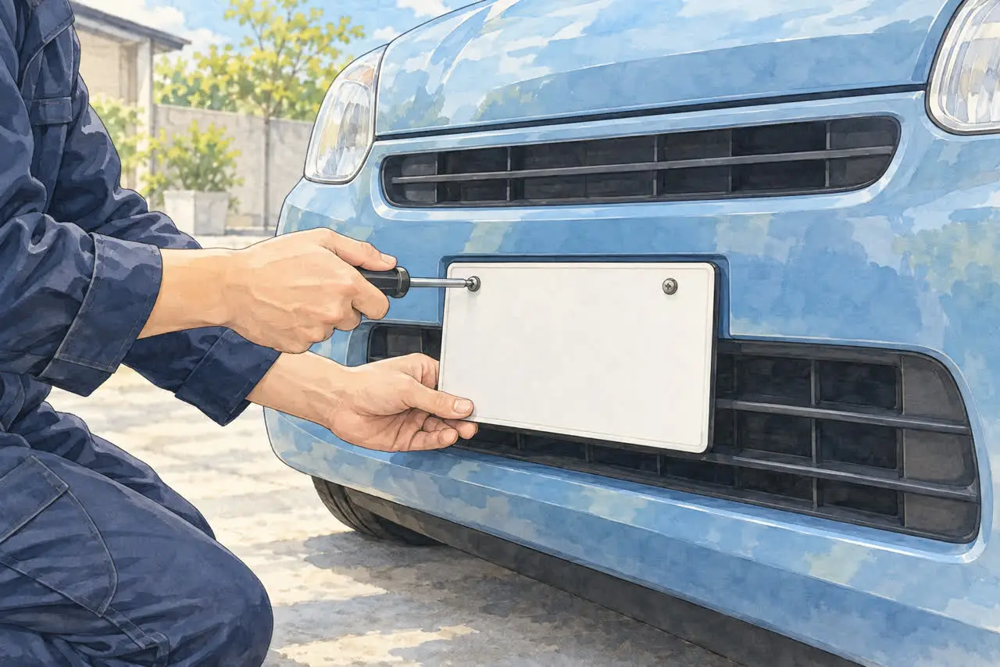

ナンバープレートのことが気になる方へ
ナンバープレートは、外せば廃車になる？
返納のしかたと、外しただけでは終わらない理由
公開
こんにちは、東京都足立区江北で自動車解体・廃車買取をしている「大崎商店 環七店」です。
この記事の要点
- ナンバープレートを外しただけでは、廃車になりません。
- ナンバーは、廃車の手続きの中で、窓口に返納します。
- 手続きをしないと、自動車税（軽自動車税）はかかり続けます。
「ナンバープレートを外せば、廃車になるの？」
「廃車のとき、ナンバーはどうすればいい？」
「ナンバーをなくしてしまったけれど、どうしよう？」
結論からお伝えすると、ナンバープレートを外しただけでは、廃車になりません。 ナンバープレートは、廃車の手続きの中で、窓口に返納するものです。外しただけで手続きをしないと、自動車税（軽自動車税）は、かかり続けます。
この記事では、ナンバープレートの返納のしかたと、外しただけでは終わらない理由、なくしたときの対応を、やさしくご紹介します。後半では、足立区の大崎商店の場合もご紹介します。
① ナンバープレートは、廃車の手続きで返納します

登録・使用中の車を一時抹消・一時使用中止する場合や、解体に伴って初めて返納する場合は、通常、車検証の原本とナンバープレート（前後2枚）を提出・返納します。ナンバーの返納だけで申請が完了するわけではなく、申請書や名義に応じた書類も必要です。
- 普通車：使用の本拠の位置を管轄する運輸支局・自動車検査登録事務所で、抹消登録の手続きをします
- 軽自動車：使用の本拠の位置を管轄する軽自動車検査協会の事務所・支所で、自動車検査証返納届（一時使用中止）や、解体返納の手続きをします（解体返納は、車検証の原本と、現在使用中のナンバープレートなどが必要です。軽自動車検査協会・解体返納）
すでに普通車の一時抹消や軽自動車の一時使用中止で返納済みなら、その後の解体届出で同じナンバーを再提出する必要はありません。 必要書類は手続きの種類で異なるため、返納済みであることを窓口や依頼先に伝えましょう。解体に伴う永久抹消・解体返納・解体届出は、解体報告の連絡を受けてから申請します。税の窓口で、自動車税・軽自動車税の申告も確認してください。
書類のくわしい内容は、廃車に必要な書類チェックリスト（普通車）、軽自動車の廃車に必要な書類・準備チェックリストの記事をご覧ください。
② ナンバーを外しただけでは、廃車になりません
「乗らなくなったから、ナンバーを外しておいた」「車検が切れたまま、置いてある」という車はありませんか。
ナンバープレートを外しても、それだけでは登録・使用中止の手続きは終わりません。 車検切れや使っていないことだけでは、自動車税・軽自動車税の課税は止まりません。 原則として、毎年4月1日時点の所有者等に課税されます。普通車は抹消登録、軽自動車は一時使用中止・解体返納など、状況に合う手続きが必要です。
- ナンバーが付いていても、外してあっても、手続きをしていなければ、税金は止まりません
- 車検が切れていても、手続きをしていなければ、税金は止まりません
- 普通車は、抹消登録した月までの分が課税されます。翌月から年度末までの分が減額され、納付済みで過払いになれば還付されます（東京都主税局・自動車税のよくある質問）
- 軽自動車税には月割りの還付がありません。 4月1日時点で課税対象なら、4月2日以降に廃車にしても、その年度分は全額納付が必要です（足立区・軽自動車税）
乗る予定がない車は、早めに、廃車の手続きまで終わらせるのがおすすめです。税金の仕組みは、3月中に廃車した方がいい理由の記事、車検が切れた車の廃車は、車検切れの車は公道を走れない。どうやって廃車にする？の記事をご覧ください。
③ ナンバープレートは、いつ・誰が外す？

自分で車を持ち込む（自走する）ときは、外さないでください。 ナンバープレートがない車は、公道を走れません。外してしまうと、車を運転して、運ぶことができなくなります。
業者に依頼する場合は、取り外す人・タイミングを依頼先に確認しましょう。 自分で申請する場合も、先に車の保管場所や運搬方法を決めてください。ナンバーのない車を、そのまま運転して窓口へ行くことはできません。
普通車は、後ろのナンバープレートの左上に「封印」がついています。軽自動車には封印がありません。 封印の取付は運輸支局または封印取付受託者が行います。封印を壊したり外したりした車は、プレートを付け直すだけでは通常の走行に戻れず、再封印の手続きが必要です（北海道運輸局・封印）。廃車に向けて外す場合も、その後は自走しない前提で、依頼先または運輸支局に確認してください。
持ち込みの流れは、廃車する車を、自分でお店に持ち込むときの流れの記事をご覧ください。
④ ナンバープレートをなくした・盗まれたとき
ナンバープレートを紛失した、盗まれたときも、廃車はできます。 ただし、返納できないため、次の手続きが必要です。
- 警察署へ届け出る：紛失・盗難の届出をします
- 普通車は理由書を提出する：返納できない事情、届出をした警察署名・届出日・受理番号などを記入します。届出が受理されなかった場合の記載欄がある様式もあります。窓口に事情を伝え、指示を受けてください
- 軽自動車は車両番号標未処分理由書を提出する：返納できない理由、前後のどちらか、車両番号、使用者・所有者等を記入します。普通車の理由書とは別の様式です。警察への届出情報など、追加で必要なものは申請先に確認してください
- 見つかったら、返納する：あとからナンバープレートが見つかったときは、返納します
様式や必要書類は、窓口によって異なる場合があります。手続きの前に、運輸支局や軽自動車検査協会、依頼先に確認してください。（普通車・理由書（遺失又は紛失）・普通車・理由書（盗難）・軽自動車・車両番号標未処分理由書）
前後のうち1枚だけなくした場合も、そのまま公道を走らせないでください。 残っているプレートは保管して、廃車時の返納方法を確認しましょう。廃車にする予定なら、番号変更や再交付を先に進める前に、その旨を依頼先へ伝えてください。
⑤ ナンバーが付いたまま、放置された車は
車検が切れて、ナンバーが付いたまま置いてある車は、税金がかかり続けていることに気づきにくいものです。
- 通知や納税のお知らせが届いていないか、確認しましょう
- 乗る予定がなければ、引き取りと廃車の手続きを、依頼先に相談しましょう
- 車検切れの車は、公道を走れません。 ご自身で運転して運ぶのではなく、引き取りを依頼してください
ご自分の車の場合が気になったら、お気軽にご相談ください。車の状態と置き場所を伺い、ご案内します。
電話で相談する03-3854-4141よくある質問
Q. ナンバープレートを外せば、廃車になりますか？
A. なりません。ナンバープレートの返納と、必要書類による抹消・返納の手続きが必要です。外しただけでは、税金も止まりません。
Q. 車検が切れて、ナンバーを外してあります。税金はかかりますか？
A. 車検切れやナンバーを外したことだけでは、課税は止まりません。普通車は抹消登録、軽自動車は一時使用中止・解体返納などの手続きと税の申告を確認してください。軽自動車税は、年度途中に廃車にしても月割り還付されません。
Q. ナンバープレートをなくしました。廃車できますか？
A. できます。警察署へ届け出て、理由書などを提出します。窓口や依頼先に、必要な書類を確認してください。
Q. 自走して持ち込むとき、ナンバーは外しますか？
A. 外さないでください。外すと、公道を走れません。
Q. ナンバープレートは、自分で外せますか？
A. 自分で申請する場合は、返納のために取り外すことになります。その後の運搬方法も含めて窓口へ確認しましょう。業者に任せる場合は、取り外しのタイミングを依頼先へ確認してください。普通車の封印を外すと、通常の走行に戻すには再封印が必要です。
Q. 一時抹消のとき、ナンバープレートを返納しないとどうなりますか？
A. 一時抹消では、原則として、前後のナンバープレートを返納します。返納しないままでは、手続きが済まないことがあります。紛失や盗難で返納できないときは、警察に届け出て、運輸支局に理由書などの必要書類を確認してください。くわしくは、この記事の「④ ナンバープレートをなくした・盗まれたとき」をご覧ください。
大崎商店の場合：ナンバープレートのこと
ここからは、足立区の大崎商店の場合をご紹介します。
大崎商店では、車の引き取り・買取にともなって、廃車の手続きをしています。
- ナンバープレートの取り外し：一時抹消・永久抹消の手続きのタイミングで、当店が外して、窓口へ提出しに行きます。 紛失を防ぐため、それまでは、車に付けたままにしておきます。お客様が外す必要はありません。 外すと、公道を走れなくなりますので、お持ち込みのときも、付けたままお越しください
- ご自身で先に一時抹消などを済ませた車：手続きのあとの車は、そのまま自走できません。車検切れの車と同じ扱いで、当店が引き取りに伺います
- 車検が切れたまま、置いてある車：車検切れや、ナンバープレートを外したことだけでは、税金は止まりません。お早めにご相談ください
- 紛失・盗難のとき：必要な書類は、ご依頼時にご案内します
大崎商店では、
- 解体費用・手続き代行費用・印紙代は別請求しません
- 足立区内は、引き取り無料
- 足立区外も、買取価格がつかない車は、環七店から片道約30分圏内は引き取り無料
- 買取価格がつく車は、圏外でも、所在地と車の状態によっては無料で引き取り（事前にご案内します）
- 車のお持ち込みは、どこからでも歓迎（基本は環七店。日時は、事前にお電話でご相談ください）
ナンバープレートのことも、大崎商店にご相談ください
電話で相談する 03-3854-4141メールで相談する（フォーム）ご来店の前に、お電話ください。引き取りなどで外出していることもあり、お電話いただければ、受け入れの可否や、ご案内できる日時をお伝えできます。
大崎商店 環七店
電話：03-3854-4141
〒123-0872
東京都足立区江北7丁目1−3
営業時間：月〜土 10:00〜18:00
休業日：日曜・祝日
環七沿い／舎人ライナー
西新井大師西駅
大崎商店 入谷店
電話：03-3899-2837
〒121-0836
東京都足立区入谷7丁目5−11
営業時間：月〜土 9:30〜17:30
休業日：日曜・祝日・第2土曜
引き取りやご相談のお電話は、環七店がスムーズです。車検証（または自動車検査証記録事項）をお手元にご用意いただくと、ご案内がスムーズです。
※掲載のイラストはAIで作成したイメージです。実際の店舗・役所の窓口を撮影したものではありません。
参考：軽自動車検査協会・解体返納／北海道運輸局・封印／国土交通省・理由書（遺失又は紛失）の様式／軽自動車検査協会・一時使用中止／北陸信越運輸局・永久抹消登録、解体届出／東京都主税局・自動車税のよくある質問